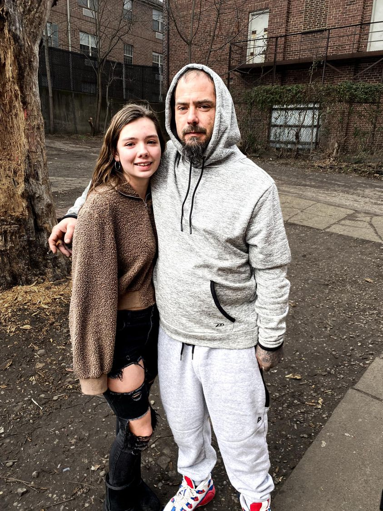

Mobile uploads
When they say Love Conquers All, this is what they mean right here.
A couple years ago on some cold winter day I got a call from a 14 year old girl. She heard I knew her dad. So she reached out to me. I knew where he was. I went down to the Adams Street camp. He came out of the woods looking barely alive. I often tell him that I don’t recall seeing anyone look more homeless than I saw him on that day.
I told him I talked to his daughter and she wanted to talk to him. I asked him if he wanted to talk to her. He looked nervous and overwhelmed by that idea. But he said he did. I dialed my phone and handed it to him.
I didn’t think much more about it. Family members wanting to see if their loved one is still alive is sometimes a thing.
Not long after that this young person wrote her dad a 3 page letter. I remember him showing it to me. It clearly made an impression on him.
This year that dad decided he wanted to be a part of his kids’ lives.
He got into a housing program. He rented a room. He got a job. He bought a car.
And yesterday he stopped by to introduce me to his daughter, Savannah - pictured here with her dad, Josh Imler. She was the young person who called me 2 years ago to try to talk to her dad.
She spent the night at his house 2 nights ago.
Success stories like these are pretty rare. But when they happen it’s usually because of love. A homeless person loves someone, usually a child. And they completely transform.
“Hitting rock bottom” almost never does it. Humans are far too tough to let a little thing like freezing weather, complete isolation and starvation to change our lives. There’s only one thing that does it: Love.
Thank you Savannah. All I could ever do is be a friend to your dad. You saved his life.